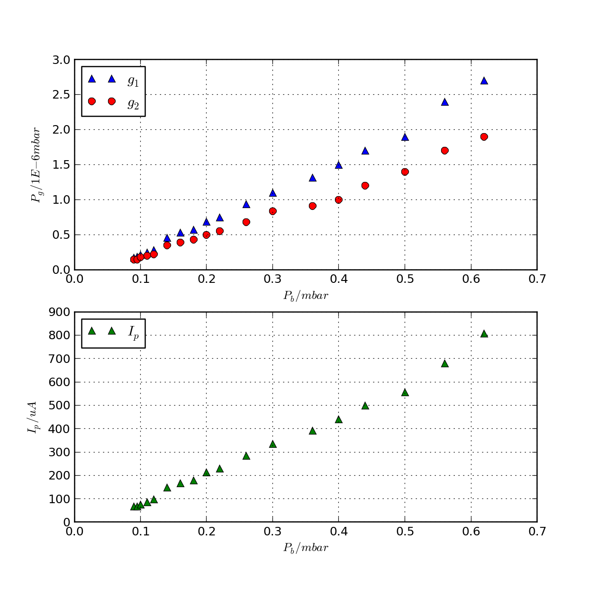
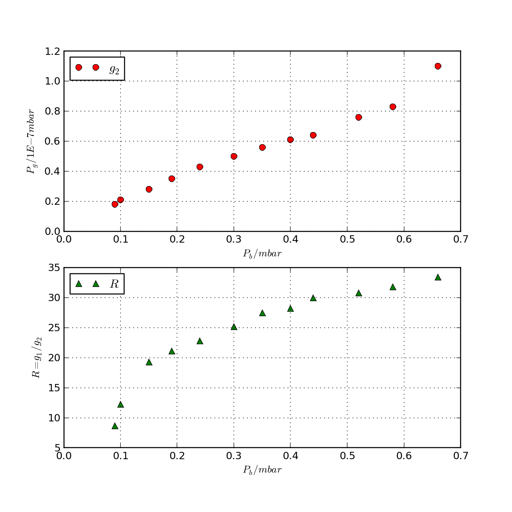

Research notes: January 2013
Table of Contents
Automation program for weighing/state-detection
Experimental overview
- Loading Ca+
- Switch on oven (low) and PI lasers
- Switch on optical kicks, start p7888 in continuous/measurement mode
- If a peak above a threshold amplitude is detected at the known frequency of Ca+, stop oven and PI lasers (cross fingers that only one ion was loaded)
- Loading N2+
- Switch on dye laser for N2 PI, and synchronous pulsing of the inlet valve
- Monitor peak of FFT for a shift to the known 2-ion Ca+ & N2+ crystal frequency. If a `double' shift is seen (Ca+ & 2xN2+), empty trap and start again
- If a single shift is detected, switch off N2 PI and pulsed valve, switch off optical kicking pulse sequence
- State detection
- Switch on dipole force laser and Ca+ amplification sequence, yet to be determined
- Monitor FFT for amplitude at known 2-ion crystal frequency. We need to determine a fixed time after which we know we should have positively identified an N2+ ion in the ground state
- After fixed time, eject ions, re-start experiment, unless we want to look at time evolution of gnd-state population
- Configuration change check and re-arrange
- After N2+ is identified in the trap the CCD camera must be constantly checking for configuration change (N2+ and Ca+ swapping places). If there is a change, then data must be thrown away and the experiment started again.
Software overview
Run-time procedure:
- Check instrument status: GetStatusData()
- Write settings for measurement: StoreSettingData()
- "settings.prena", spectrum length setting
- "settings.timepreset", total measurement time (not set, softw. stop)
- "settings.savedata", bit 0 = 0 (no autosave), bit 1 = 0 (no listfile), bit2 = 0 (no histogram)
- "settings.fmt", format, 0 == ASCII, 1 == binary
- "settings.sweepmode", sweepmode & 0xF: 0 = normal, 4 = sequential, bit 6: Wrap around, bit 5: DMA, bit 4 Softw. start (normal sweepmode, softw. start)
- Signal LabView to start loading and weighing.
- Start measurement: Start()
- Read the spectrum:
- GetData() (pointer to data) (not working yet)
- GetSpec() (get a spectrum value)
- GetBlock() (a block of spectrum data)
- LVGetDat() (copies spectrum to an array) (currently in use, slower than necessary?)
- Run FFT on histogram data, determine peak height in regions of interest (single component crystal frequency, two-component crystal frequency)
- Determine next step from result of FFT:
- No Change -> Return to 5.
- Ca loaded -> Stop loading Ca, begin loading N2, return 5.
- N2 loaded -> Stop loading N2, stop weighing, begin state-detection, return 5.
- Phase change during state-detection -> rearrange ions, return to 5. (I'm not sure if this one is possible)
- Dipole excitation detected/unsuccesful -> exit to 8.
- Stop dipole laser, eject ions, return to 3.
Older version
Run-time procedure:
- Check instrument status: GetStatusData() or GetStatus()
- Write settings for measurement: StoreSettingData()
- "settings.prena", spectrum length setting
- "settings.timepreset", time preset value
- "settings.savedata", bit 0 = 0 (no autosave), bit 1 = 0 (no listfile), bit2 = 0 (no histogram)
- "settings.fmt", format, 0 == ASCII, 1 == binary
- "settings.cycles", number of cycles in sweep mode
- "settings.sweepmode", sweepmode & 0xF: 0 = normal, 4 = sequential, bit 6: Wrap around, bit 5: DMA, bit 4 Softw. start
- Signal LabView to start loading and weighing.
- Start measurement: Start()
- Read the spectrum:
- GetData() (pointer to data)
- GetSpec() (get a spectrum value)
- GetBlock() (a block of spectrum data)
- LVGetDat() (copies spectrum to an array)
- Histogram data, run FFT on data, determine peak height in regions of interest (single component crystal frequency, two-component crystal frequency)
- Determine next step from result of FFT:
- No Change -> Return to 5.
- Ca loaded -> Stop loading Ca, begin loading N2, return 5.
- N2 loaded -> Stop loading N2, stop weighing, begin state-detection, return 5.
- Phase change during state-detection -> rearrange ions, return to 5. (I'm not sure if this one is possible)
- Dipole excitation detected/unsuccesful -> exit to 8.
- Stop dipole laser, eject ions, return to 3.
DLL programming notes
Source files
DLL access notes
Usage of the provided dlls appears to be fairly straightforward, at first glance. From looking at some of Wolfgang's old code, it looks like using a dll is just a case of including it as a header file in your code. Then you can call the functions of the dll (the prototypes of which are in the manual) in your main code.
Specifically, I must write the header and a .lib file myself, and then include the dll in the same folder as the compiled executable. The function prototypes for the header are included in the manual, as are the export commands for the .lib file.
The header file can be copied straight from the manual. Likewise the export library:
I'm still not sure how the export library part works. Hopefully I can just have the file in the same folder as the program and it will use it to link my code to the .dll.
Need a windows computer to work with in my office… waiting on the ITS guys to install on my old laptop.
Started work at home using visual studio (still waiting on a windows installation at work).
The compiler doesn't recognise some of the declarations in the header file I copied over. In particular qualifiers such as the "HUGE" and "FAR" in e.g. lines 106 & 107 :
unsigned long HUGE *s0; unsigned long far *region;"
Neither does the compiler recognise the data type (?) "HANDLE" in e.g. line 110:
HANDLE hs0;
It looks like HANDLE and other unrecognised types are defined in the headers "windef.h" and "windows.h". I haven't confirmed where HUGE and FAR are defined yet however.
"far" and "HUGE" are pointer data type qualifiers with similar functionality. My impression is that they deal with addressing memory spaces that are wider than the data types that address them.
"far" has been recognised with the inclusion of the windef.h header (declared inside the DP7888.h file), but "HUGE" is still unresolved.
Furthermore the inclusion of windef.h has caused the compiler to throw up a bunch of other errors.
Some of the data types and qualifiers in the header are undefined. Definitions for all but the qualifier "HUGE" are found in "windef.h" standard library, but that's no guarantee that it's the correct definition. Sent an e-mail to info@fastcomtec.com to inquire as to the correct dependencies.
Dr. Wagner of Fastcomtec: "our software worked already in Windows 3.1, here programs could use different memory models named small, large and huge. The word huge was an attribute to pointers. This is now obsolete and you may just delete this word or write a line
#define HUGE
at the beginning of your program."
Hiroki pointed out the correct way to call a function from a third party dll using `explicit linking' (there are many examples under that search term). The header file is only required to declare the structures that are arguments for the functions and to mimic their prototyping in the explicit linking code. The .def file is not required, but the ordinal representation given can probably be used instead of the function names when looking for the function pointers.
No luck yet as far as running the program on the server machine goes. Plan A was to test calling the dll by starting the server, but we can't do that without initialising a valid window handle, which I don't know exactly how to do.
Instead we try extracting information from the server after running it manually, using GetSettingData(). Sadly this causes a crash when run on the server machine, and the error report is not helpful. It might be a good idea to compile and debug on that machine specifically, in order to get more information on the error.
Haven't managed to install visual studio on the target computer. It's generally flipping out and not letting me install anything, so I don't know how far I can trust it in general. Doing some diagnostic work on it to figure out its problems before going any further.
(Friday): Doesn't work on the other computer with a p7888 either (Manati). Same error.
It turns out that the program probably wasn't calling the dll properly, thanks to spaces in the library path not being handled properly. The dll and path have been moved to "C:\", though I could and probably should use one in System32 folder.
Fixing this problem allowed the program to run on Manati (and it probably would on the other computer too), but it didn't return the correct value of the variable that the program tries to extract from the server.
(Monday): The function I've called maybe doesn't read the settings saved to the server. The header included in the manual states that it read the settings saved to the dll, and there are two functions in the dll for saving settings, with only one explicitly saving to the dll. That implies that the other saves settings locally (?). I must make sure a) that when using the GUI, I use the save setting that saves to the dll (if there is one) b) that the program I'm using accessess the same dll that is being used by the server (the dll in the System32 folder).
If there is no option to save to dll in the GUI, I should load that function up into my program, so that I can write to the dll and then read from it.
Success. The program correctly reads the updated settings from the dll in the system32 folder, after they are changed using the p7888 server program (run manually).
General notes
- Counting card, model p7888
- Analysis code written in c for speed - can I make anything of Wolfgang's code for the micromotion compensation counting cards?
- Does our model of p7888 include a GO line?
- It doesn't look like it has an external connection to it, but there should in principle be one somewhere internally
- However the Start line isn't being used in the configuration for optical kicking experiment –> It must be being used in "time difference" or "differential" mode, described in the hardware manual. The output is time differences from the inital pulse in channel 1 or channel 2, as opposed to differences from the start pulse.
- Ask Kevin how his experiment is automated (not in today - e-mail)
- Pulse sequence is set by pulse generator
- 2 outputs, one controls the AM input of the VCO, the other controls the RF switch
- RF switch switches to VCO at different frequency in order to amplify the kick
- Is there a second switch that simultaneously starts the RF switcher and counting card?
- NB counting card settings: DMA mode is for rates higher than 1 MHz and should be disabled for lower count-rates (not sure why yet)
- (X -> see [16-10-2012]) Hardware manual suggests that an option for "synchronising" the p7888 card with the experiment is to use wrap-around mode, which counts continuously (counter wraps back to zero when maxed), and to use the `sync out' output to synchronise with the experiment. I'm not sure this is the most efficient way we can get this done, but it might work if I can't find exactly what I'm looking for
- It is possible to use the digital inputs (internal) to start the system, according to the manual
- Wrap around mode probably is the best way forward. If we can use DMA at the same time, then acquisition can happen in parallel with an FFT operation on the last X data sets in history, where X is however many we need to get a reliable frequency out
- Ideally this way the data would never have to actually be written to disk (slow). However this requires access to whatever space the DMA writes to (RAM?), and I haven't yet found any information on that yet.
- Might have to buy the appropriate dlls from the manufacturer for the above scheme. We don't know yet that writing to disk and working from there will be too slow. It's worth a try to start with.
Probably going to settle, to start with, with fixed measurement times and analysing complete files, just to get the infrastructure up.
Hiroki wrote communication vi's to send commands to the p7888. It's not a difficult process anyway. All communication done with DDE vis (inbuilt) and the commands that need to be sent are in the p7888 manual.
The whole thing can be written in Labview using the aforementioned DDE vis, but in all likelihood this will be a slow process and lead to a lot of dead-time
One idea was, in order to have something working quickly, to write the whole thing in LabVIEW, and then slowly replace components with faster c-code as required. This would be quicker if the time taken to learn to program the card directly with c is significant.
However, I'm not sure it's really all that difficult, and rather than put effort into code I will eventually have to throw away (LabVIEW vi's), it might be a better idea to start straight from c.
The way dll functions are accessed is somewhat cumbersome. After the library is loaded (LoadLibrary()) we extract the required function pointer from the library (GetProcAddress()). We must then do a `mock-prototype' of the function using typedef, which obviously requires the function argument and return types. The extracted function pointer is then typecast to the type defined latterly and defined with the name you want it to have (all details can be found with a quick search on "explicit linking" for dlls).
The latter lines are not nice code to read, and I would rather have it hidden in a function library called in a header. The problem with this is that no single function can easily be written that deals with all the different argument and return types that the functions I'm loading have. Since there needs to be a typecast, the argument types must be passed to the calling function, and I'm not sure there's an easy way to do that.
A reasonable approach to the problem (previous entry), would be to do the typedefs that amount to function prototyping in a header. With this approach all I would need to do is call LoadLibrary() once, at the start of the main, and then GetProcAddress() for each function that I need to use, and do declaration and typecasting. This reduces each function-loading to three lines - which is nice - but calls for a bunch of different typedefs which must be labelled sensibly and understandably - which might be difficult.
I think it'd be convenient to have all of the definitions written out once in a header though, because then I'd only have to do that work once. There's quite a lot of return-argument combinations, so I might as well get it all out of the way.
The above works just fine. I have written out all the typedef/prototypes into the same header file that contains the data-type definitions.
This simplifies the structure of the program: It can be a single executable running all of the functionality of the experiment. The only question is to make sure that we can extract data from it and give it parameters from LabVIEW. This should be possible by writing data and reading parameters to and from file, or maybe by using a vi in LabVIEW.
NB there seems to be some standard protocols for inter-application communications e.g. ActiveX
Using ActiveX, I would need to set up my application as an ActiveX server so that my LabVIEW program, an ActiveX client, can access data and functions of it. This can all be done after the main program functionality is written.
Delving deeper into the modes of operation:
- Stop-after-sweep mode awaits a start signal, and then records stop signals until the specified amount of time has passed. 200 ns after this, the device is ready to receive a new start signal to take a new sweep. It's not clear whether or not this becomes an entirely new spectrum, or whether it is `added' on top of the last in a histogram.
- Wrap-around mode has no start triggers, I think. It runs continuously, recording stop trigger times from the start of the measurement. If the apparatus is unsynchronised with the card, then the user must be sure to track rollovers in the cards 36-bit timer. However, if the user starts the experiment with a trigger from one of the clock bits, then the experiment is synchronised with the card i.e. all time data will be with reference to the clock trigger, and higher clock bits can be discarded. It's not clear whether data is written as a long list of arrival times or `binned' on board the card.
- Sequential mode is like Stop-after-sweep mode, but the manual states that it takes a specified number of sweeps before the "FIFO is emptied, the corresponding spectra closed and a new sequence with the same number of sweeps is started".
The last line of the sequential mode description implies that each sweep, associated with a period following the start trigger, is considered an individual spectrum. The wrap-around mode operation implies that the data is recorded simply as a long list of arrival times. These are not necessarily exclusive, and since there's only one type of data structure defined in the header, I guess there's a way that the definitions go together. Perhaps all the data in wrap-around mode is considered a single spectrum.
It would be a good idea to look at the structure of the data that gets written to file. While I'm at it, I will write down the settings typically used.
Manual information on the data formats:
"Spectra data files with extension .asc contain in each line one decimal number in ASCII containing the corresponding count value in the histogram.
Binary data files with extension .dat are written with 4 bytes per data value, as usual in the Intel world in reverse order i.e. the least significant byte comes first.
Another ASCII file format is the x y format with extension .csv. It can be read for example with Excel and contains the channel number and content as two decimal numbers in ASCII per line separated by a TAB character."
"List files have the extension .lst and start with a header containing the usual report and configuration data in ASCII as in the .888 files. The header ends with a line containing [DATA]. Then follows the data, depending on the format chosen for the data file either in ASCII one number per line, or in binary 4 bytes per number, as usual in the Intel world in the reverse order, i.e. the least significant byte comes first.
The highest 1 or 2 bits contain the information from which input the event did arise: when using the two input mode with 1 nsec time resolution, only the highest bit 31 is used for the channel identification, 0 means input channel 1, 1 means input channel 2. The start event is a 32 bit data value with only bit 31 set to 1."
i.e. the start event reads 80000000h in hex, or -2147483648 in ASCII.
Either sequential or wrap-around mode is the mode we need to use. Ideally wrap-around mode, but I'm still not sure what the format of the data is in this mode. For instance does it write a .dat/asc histogram, or just a list file. The manual only talks about list file behaviour when describing the mode.
NB if using wrap-around mode the optical kicking must be triggered via the p7888 clock. This can be achieved by using it as the external trigger to the pulse generator. This isn't a very flexible approach, but it probably doesn't need to be. In any case if we need the flexibility we can probably use the other modes with the time-preset function and software start.
Assuming wrap-around mode makes spectrum data then the appropriate settings would be:
settings.savedata = 0; //no saving settings.fmt = 1; //binary format settings.sweepmode = 0x28; //wrap-around and Softw. start
If we were to use the regular stop-after-sweep mode with time preset and software start, then we would need to provide a start pulse to the p7888 from the pulse generator (this is the way we are doing things now), in that case the settings would be:
settings.sweepmode = 0x8; //normal mode with Sofw. start
In the end, I'm leaning towards the latter option, as opposed to the wrap-around mode, mostly because it seems to work already. If the manual were clearer, I might be able to be more confident about that choice.
Regardless of the operation mode, we should be able to avoid saving data to file by using either GetData() to get a data pointer and read the data directly, or using LVGetDat() to copy the spectrum to an array.
If the data is available in spectrum format, then each time we access data to perform an fft, the spectrum (or indeed the entire measurement) must be reset, in order to get a fast reponse to any changes in the experiment.
If the data is available in list format, then we must bin and histogram the list ourselves, and perhaps delete old timestamps in order to save memory space if the experiment runs for a long time.
I'm starting to put together what will become the main program. There's some good progress in that I have succesfully started a measurement using the dll Start() function, and can (I think) use some of the other functions such as GetSettingData() and GetDefData().
Unfortunately, one of the important functions that I might need to use is not returning what I would expect of it. GetStatusData() throws up no errors in calling, but simply returns "0" in all of the fields of the ACQSTATUS type variable that I pass (via pointer) to it. The fields of the variable are:
int started; //aquisition status: 1 if running, 0 else double runtime; //running time in seconds double totalsum; //total events double roisum; //events within ROI double roirate; //acquired ROI-events per second double nettosum; //ROI sum with background subtracted double sweeps; //Number of sweeps double stevents; //Start Events; unsigned long maxval; //Maximum value in spectrum } ACQSTATUS;
It's quite possible that under normal test circumstances most of these could be zero, since there's no actual input to the p7888. But calling this function whilst the card is running should give us a non-zero "started" value. It would be worthwhile checking if any of the other values are misbehaving by getting them to be non-zero. The "sweeps" variable should be the easiest to change and test. Also, I haven't actually looked at ".runtime" whilst its running yet. In face that would definitely be the easiest approach.
One explanation for this function not working is that I'm not defining the correct "nDisplay" argument. GetDefData() tells me that theres 4 modules (inputs?) and 2 displays. I'm not entirely sure what this means. Entering values for nDisplay between 0..3 however gives no errors or differences in the result. UPDATE: Of course, I've already succesfully called the GetSettingData() function which takes the nDisplay argument, which kind of moots this as the source of the problem.
A suggestion from Hiroki: Rather than have the program communicate with LabView via ActiveX, it could essentially be written as a function and compiled into my own dll. We could then use LabVIEW to call the function in the dll and extract the outputs. It's worth looking in to whether or not this is feasible, rather than having to learn to program ActiveX.
Regarding the problems with the status function, I can more or less ignore it anyway: it's nice, but not necessary. On a related note, it would be worthwhile at some point looking into whether or not the hardware IOs would be useful to use.
I have started taking some example spectra using the pulse generator as an input to the p7888. As expected "spectra" are histograms of the stop events relative to the start event, and list files are a list of arrival times relative to the stop event. We need to decide which measurement mode we want to use, so here are my notebook comments on each mode:
- Single-sweep-mode. Runs indefinitely (unless one of the condition variables is set), continuously adds to the spectrum and writes listfile. "Range" and "ROI" give the span of time after a start pulse during which stop pulses will be recorded and sent. As far as I understand it, the card will send out the spectrum, or the additions to the list file after "Range" time has elapsed. "Time preset" will stop the measurement after the set amount of time. "Sweep preset" will stop the measurement after the set amount of sweeps (a new sweep is started with each start event). "Event preset" will stop the measurement after the set amount of stop events.
- Sequential-mode. Activated by turning on 2D spectra. This functions exactly like the mode above, except that if there is a stop condition then in sequential-mode the measurement will repeat according to the "sequences" variable set by the user. Rather than them being added to each other, the spectrum from each new sequence is appended to the spectra from previous sequences.
- Wrap-around-mode. This mode has no external start pulse. The clock simply runs indefinitely, and the card outputs the time stamp of stop pulses (how does it write spectra? I don't know yet, but I'm about to check). I believe setting "Softw. start" to true will give us an artifical start at the beginning of the experiment, meaning that the time stamps will be relative to that time. The utility of this mode is that the clock bits are accessible as digital output on the card, and can therefore be used to trigger the experiment. e.g. If I use the 20th bit of the card's clock as a trigger for the optical kicking experiment I will get a repetition rate of roughly 1kHz. Since all the lower bits reset at each trigger, any time stamps I now receive are with respect to the start of the experiment, as long as I ignore any bits higher than 19.
N.B. I don't yet know positively whether or not wrap-around-mode outputs a meaningful histogram spectrum as the other modes do. Since there is a syncout variable set in the dll that tells the software which bit I am using to as an output, it's conceivable that it might use that to know how to histogram the data, but it's certainly not a given.
By the nature of the experiment, single-sweep and wrap-around modes would require us to periodically reset the histogram bins to zero. This happens when we have enough data to measure secular frequency to the desired precision. If we don't reset the histogram then changes to the state of the system will not be visible over the previous collected data. This will require some synchronisation with the analysis part of the program, so that we only delete a spectrum immediately after we have loaded it into the analysis. This could be accomplished by monitoring the "runtime" or "sweeps" properties of the status, (but would obviously require that function to work, which it doesn't right now!).
Alternatively we could read the list info and, using only the timestamps from the previous x sweeps, make our own `streaming' histogram from that info. This may be the only way we can use wrap-around mode anyway, depending on how it handles spectra.
The other alternative is to use sequential-mode, and set the number of sequences higher than we expect to need. This will automatically give us time-evolving spectra. In principal this is good, but I'm worried about using up too much memory if any stage of the experiment goes on for too long.
So far right now, for the sake of hardware simplicity and simplicity of memory access and storage, I'm leaning towards using single-sweep-mode and periodically deleting the spectrum. I believe this is the most flexible option for us. It really depends on us having access to the runtime or number of sweeps for synchronisation. This means either getting the GetStatusData() function working, or accessing the hardware outputs.
Status function
The status function is actually going to be a lot more useful than I previously thought. My software needs a way to keep track of how long a measurement has been going, so that we can extract data at the appropriate time and clear the histogram .
My options are to use the status function to get run time or sweep counts from the card, use hardware I/Os, or to synchronise with an external timer. By far the easiest of all of these options is the status function.
- Update - Well it turns out the status function was working fine, it's just that before starting a measurement all of the status variables members are zero, and I wasn't waiting long enough after the start command for the card to start and update its status. i.e. the program was going through the whole instruction set before the device had updated its status.
Now that this function is working, I can start and stop the program for a specified length of time by monitoring the status.runtime variable, or I can stop according to the number of sweeps using the status.sweeps variable.
- Aside
N.B. Some testing needs to go in to finding out the reponse time of the card to commands from my program - I noticed that when I set the stop time to 10 s, the actual run time on the server program read 10.22. That's a significant discrepancy, considering optical kicking experiments are expected to be on the order of the difference (~100 ms).
Data extraction
The important question now is how to extract and operate on the spectra. The appropriate sounding functions in the dll header are:
int GetData(ACQDATA FAR *Data, int nDisplay); //Get data pointers long GetSpec(long i, int nDisplay); //Get a spectrum value void GetBlock(long FAR *hist, int start, int end, int step, int ... ... nDisplay); //Get a block of spectrum data int LVGetDat(unsigned long *datp, int nDisplay); //Copies the ... ... spectrum to an array
This function might also help during debugging:
void SaveData(int nDevice); //Saves data
The function "GetData()" takes an argument of type ACQDATA, which is structured as follows:
typedef struct{
unsigned long *s0 //pointer to spectrum
unsigned long far *region // pointer to regions
unsigned char far *comment0; //pointer to strings
double far *cnt; //pointer to counters
HANDLE hs0;
HANDLE hrg;
HANDLE hcm;
HANDLE hct;
} ACQDATA
So this function provides us a pointer to the spectrum *s0. We can read the number of channels in a spectrum from the "settings.range" (I'm not sure if this is adjusted for bin width, but we can also find binwidth in: "settings.bitshift" (Binwidth = 2 ^ (bitshift))). Therefore we can extract the entire spectrum using pointer arithmetic. My guess, however, is that this is all that the function "LVGetDat()" does anyway, so we can probably declare an array that's far too long in the first place, pass it to the latter function to write the data, and then only use the first N entries (where N = settings.range) for analysis.
"GetSpec()" doesn't seem particularly useful for our purposes, but for the optical kicking experiment specifically, GetBlock() might be handy for picking out the regions of amplification and re-cooling, where data is most significant. On the other hand of course we could just define the regions of interest (ROIs) before the experiment, so that the spectra would include only these regions anyway.
For simple debugging purposes I should write some code that will take the written array and write it to file. This will let me check that I have written all of the data and that it makes sense. I can also later use these arrays to provide sanity-checks on my in-program data analysis.
GetData() function not working. After compiling, the IDE complains about the pointer to the comment strings, saying it's a bad pointer, but I'm not sure if this is the problem. When the debugger gets to the GetData function it gets an "unhandled exception error" and dies.
The compiler doesn't complain if I erase the comment string pointer from the typedef altogether, but the same exception error comes up.
I wondered if this was to do with the fact that I was calling the function after the measurement had finished and written the data to file (therefore nothing there to read?) but if I call it before the Halt() command I get the same exception error.
Update: I never managed to get the GetData() function working, I'm not sure why. I initialised all of the pointers in the structure to the values of arrays that I declared previously, but I don't know how to initialise the handles, so I just initialised them to the value of those same pointers. No luck.
Instead I've gone with the original plan which is to use LVGetDat() on a previously declared array. I didn't write it in the above notes, but I attempted this before going for the GetData() function but had some problems with declarations (probably a typo). Anyway all I do is pass a pointer to an array that is longer than is likely to be needed, and the function writes the data to that array. I've put in a little check at the beginning of the program to make sure that the data range is not larger than the buffer, so that the acquisition will not start if that's the case.
On top of this I've written a little function that writes the array to file at the end of the program. It seems quite slow (but I need to do a more rigorous check to find out if it is), but it's not going to be a final feature of the experiment anyway. At some point a thorough rundown of execution times needs to be done to iron out bottlenecks.
Managed to get the GetData() function called without exception errors, but unfortunately it doesn't actually write anything to the ACQDATA variable (all pointers left uninitialised).
If I could get it working I could be sure that no extra copying of data was being done. LVGetData() comments say it copies the data to an array, which implies that it doesn't simply copy the pointer to the data over, but the whole data set, which would be costly. I wonder if it's likely that an operation like that will be a bottleneck for the process though.
Data analysis (FFT)
I've nabbed a file called FFTg.c from on of Wolfgang's old program folders for analysing data from the p7888. It utilises the "Danielson-Laczos" algorithm for computing the FFT, which I understand is an efficient algorithm. However the code is a little difficult to read, and without further documentation, I might consider writing my own simple (and probably quite slow) fft algorithm on ASCII data. Once everything else is in place then I can look at fast algorithms like this for computing on binary data.
For now I might use what seems to be a well-documented and recommended library called FFTW (http://www.fftw.org/). There doesn't appear to be support for integer FFT in this library, but looking at Wolfgang's code it doesn't take integer inputs either (double instead). In face looking at the code from which the FFT.c code is called from (ReadP7888SingleChannel.c), it looks like Wolfgang is just typecasting his ints to doubles (i.e. 1 -> 1.0) and then passing them to the function. I'm going to try this with the FFTW library since I'm not sure I fully understand Wolfgang's implementation.
Additionally I want to add dynamic memory allocation for the data array so that it matches the length of the incoming data histogram. This is a more elegant and memory efficient (like that matters) solution than the current approach of declaring a ridiculously large array <update: that worked fine>.
Accessing the FFTW library seemed like more work than it was worth. Instead I gave a go at using Wolfgang's code, since it's pretty much the same application. I only have a single pulse as a signal to test the FFT on, but what I got out was what I expect i.e. a flat spectrum. There doesn't seem to be good normalisation, but maybe that's to be expected.
In any case the fact that I'm getting a flat spectrum from an impulse is not necessary proof that it works. Kevin and Amy are setting up an electronic kicking experiment this afternoon, and with luck I'll be able to apply my program to their setup to see the outcome on real data.
While they get that up and running I might as well do a bit of the `frequency-detection' programming, since the output format of the FFT will always be the same. After that I can look at `amplitude-detection' for loading and dipole force measurement.
A simple first-draft would just look for the index of the max element and give the corresponding frequency. If we could tell it in advance what the expected frequency range is, then this might be robust enough for the final application. Fitting a Lorentzian would be the more general solution. It could be used to measure amplitude and also frequency in other experiments.
Using a simple peak-detection algorithm, how can the system decide whether or not there is an ion in the trap? Perhaps I'm over-complicating things - I don't really need an FFT just to check whether or not there's an ion. I can simply take an average reading of the fluorescence rate. With an average reading, I could either set a threshold rate above which I can say I have an ion, or I could wait to detect a change in the mean fluorescence.
Using fluorescence detection would probably be a quite useful thing to do throughout the experiment, in order that we can detect the loss of an ion during a run. Threshold detection is probably sufficient for most cases.
I managed to run the program on a kicking experiment on Amy's trap and succesfully extract the correct secular frequency. The program runs very slowly on that machine though. I noticed what seemed to be some variable command latency in the previous machine (Manati) on the order of a few hundred msec. On this one however there seems to be several seconds of command latency. However I didn't shut down any of the programs running in the background, which might help.
Currently the experiment is set to take data of 10 sec, which is far longer than we would like to wait to identify the secular frequency of an ion crystal. Amy says that that's the best she can do at the moment, but hopefully some optimisation will bring those times down to sub-second by the time we want to do some real experiments.
- NB fluorescence-level detection wasn't working properly. Calculated fluorescence rate came out orders of magnitude too low. However I think it's a simple matter of getting the right conversion factor
The problem with fluorescence-level detection was just bad programming. Fluorescence detection now works properly. The program is a fully functioning kicking experiment initiation and analysis that will extract the secular frequency of the ion in the trap.
UI/LabVIEW integration
The current program is compiled as an .exe that uses the measurement settings defined on the server software. It would be trivial to define the settings from within the compiled program, but that is perhaps not flexible enough for general use, requiring the user to edit source and compile in order to change settings.
The most basic alternative is to pass arguments to the exe upon calling it from the command line. Doing this manually isn't reasonable, but the user could edit a configuration file that could be passed to the exe instead.
A more user-friendly experience would be to make a LabVIEW vi that has setting controls that are sent, ensemble, to the exe upon calling. In LabVIEW, calling a exe with options requires writing and calling a batch file with the required commands via the "System Exec VI".
Using this technique, we would require that the exe write the analysed data to file, and that LabVIEW would read and display it. Any interaction with devices apart from the p7888 would also have to be managed in this way.
The better alternative has already been mentioned: Hiroki has compiled DLLs for use in LabVIEW before, and claims its a fairly straightforward job. There's no need to compile .lib or .def files - I would guess that LabVIEW gets everything it needs from the dll header file.
This would require that we write the program as a function instead of an executable. That way LabVIEW can pass all the relevant settings as arguments to the function, and extract all the relevant data as returns from it.
Interactions with devices other than the p7888 could then be handled entirely within LV, which would be ideal.
Given this UI strategy, I think that the best design for the automation software is to break it up into three separate DLLs, each associated with the different phases of the experiment: Ca loading, N2 loading, and state detection. Each DLL is then a function which performs the correct procedure, monitoring data until the specific conditions of the experiment are met. At this point the function exits with the desired return.
It's not clear to me whether or not this will allow us to read data, such as the secular frequency or fluorescence level, in realtime. In principle if we pass a variable from LV to the function, and have that variable updated during the function call, then LV can read it whilst the function is running and show it as it updates. I suppose that this depends on the function running in a different thread than the other operations of LV.
Making each repetition of the experiment a separate LV call of the DLL seems like it would incur unnecessary overhead, so I'm ruling that out. There's always the possibility that the function can write to file and LV can read it. Though I think that'd probably slow things down a bit, I'm not sure if it would be the bottleneck for the rest of the experiment.
The first step in the process of building up the complete program then, is to build each function as a standalone executable, and test that it does its job properly. From there, I can write a dummy "hello world" application to call as a dll from LV to find out its capabilities. Then it's a case of converting each executable to a dll, and writing the UI in LV to finish everything off.
- Slightly different strategy:
After speaking with Hiroki I've realised that LV would have no access to the variables being written whilst the function was operating unless the function ran in a separate thread. This is something that should be possible to do within LV, but perhaps is more complexity than we need for a first draft of the program.
The simpler approach would be to break up each operation into time-critical and non time-critical sections. Non time-critical commands can be executed by LV using the already made DDE-command VIs, e.g. starting an experiment, and halting after measurements meet specific conditions. Time-critical sections of code can run within dll functions as long as no data is required to be extracted in real-time. To tackle the problem of data extraction, LabV can call the LVGetData() function (or the GetStatusData() function) from a dll.
This is certainly not going to be as fast as running everything from within a function/executable due to the LabV overheads, but will be quick to implement and make for easy programming of the user interface.
- Access DP7888.dll directly from LV:
I've written a .vi that accesses functions in the DP7888 dll directly from LV using the "call library function" node. As long as the p7888 server is not in high priority mode, basic functionality is there e.g. Start() and Halt() functions work as required. However the output of the GetStatusData() function is garbled. This might have something to do with the fact that its argument is a non-primitive struct, or with byte-orders being different in C than in LV.
- Garbled data problem identified:
The problem with data being garbled (see last entry) was identified: There seems to have been an extra four bytes added to the data structure after the first variable (long int, four bytes). I have no idea where it came from or what it represents, but putting in a padding variable to accept that piece of data makes sure that all the following bytes are correctly assigned.
- PMT program for p7888:
I've written a PMT reader program for the p7888 as a practice-run for designing the automation project. It still relies on the settings being given via the p7888 server for now, but the next step should be to liberate it from any requirement of the server whatsoever.
NB getting status and settings from the card without the server requires more than just calling e.g GetStatusData(). We must also call the functions that request the data from card e.g. GetStatus(), which presumably stores status data in the dll. I'm not sure if this is how getting real spectrum data works, but it's worth bearing in mind.
- Update to garbled data problem:
LV appears to insert 4 bytes before doubles i.e. 8-byte variables. It may be coincidence, but in the data structures we're using there is always an odd number of 4-byte variables before an 8-byte variable, which could mean that LV is putting in the 4 bytes in order to align the variable addresses according to 8 byte chunks. Apparently this is a fairly typical thing, according to Stephen.
- Running a program without the server:
I have incorporated the ability to change and read settings from the PMT vi. However the program still needs the server to run properly - starting the vi without the server results in no-data being updated.
My guess is that the server must run some initialisations, probably defined in the ACQDEF variable mentioned in the dll header files. According to the manual:
"At program start the configuration files P7888.INI and P7888A.CFG are loaded. Up to 2 P7888 modules can be used. Specify the number of modules in the P7888.INI file with a line devices=n. You can also specify more than one module if you have only physical module. The software runs then for the not physical modules in demo mode and it is possible to load spectra and compare them in MCDWIN."
The ini file sets no. of devices, pll frequency, update rate and blocksize for DMA words. The .CFG file apparently holds the default settings. Unfortunately only the no. of devices is accessible from the ACQDEF structure. This means we may not be able to set the proper initialisation via the dll functions.
LabVIEW PMT vi for p7888: I've been testing the vi I wrote for the p7888 that allows it to be used as a PMT counter. Although it could probably pass as an useful application, it suffers from some unexpected deficiencies.
The main issue is that the vi is very sensitive to windows priority/timing issues i.e. if any other process (such as user-interaction with the vi) tries to take place then the count rate varies wildly from its actual value (tested with SRS function generator).
The GetStatusData() function call populates the ACQSTATUS variable which stores values of the total sum of events, the runtime of the measurement, and a variable called roirate, which seems to use the latter two variables to calculate an event-rate per second. Given this data-structure and the behaviour we see, it seems that the variables must be copied from the card to the dll/memory sequentially and in a manner that is not protected from interruptions by the operating system. I wonder if there's a way to call the function inside the dll with high priority? Perhaps writing a wrapper around the dll and configuring that to be highest priority?
A separate issue is that the counting seems to break down at rates higher than 400 kHz. This might be an issue with the function generators I'm using. In any case we are not expecting rates much higher than this and so have other fish to fry for now.
- Priority issues in LabVIEW:
I don't seem to be able to tackle the priority issues using LVs tools: LabVIEW allows you to embed the dll call within a subVI, and then set the priority of that VI as "highest" or "subroutine" (not entirely clear on the distinction between the two). I've tried both and neither help with rate issues I have noted. This might have something to do with the fact that the server handles most of the real work, and that is not running in high priority mode. Running the server in HP mode is unfortunately also a no-go, since then we can't read data in any reasonable amount of time from LV.
I think this just about kills ideas for fixing the priority issues in this application. So perhaps will we either live with it, or stick to using the old PMT VI in parallel. The latter further motivates the idea of a remote interface to Marvin from the trap computer for running the p7888 functions.
- Running p7888 vis remotely:
I've written a server and client vi pair for running the PMT program remotely from another computer. Most of the vi code is packed into the client program, whilst the server is quite general and simply reads the command and inputs from the client (via datasocket), executes the command, and writes the result back to datasocket for the client. It's all done asynchronously for simplicity, but seems to work quite well regardless.
In fact the PMT program runs a lot better in remote mode than on Manati, which can easily be explained by the p7888 server sharing less resources with labVIEW. This could mean that we can now run all the data acquisition from the p7888, instead of using the counter cards.
Automation program notes
- Overview:
The datasocket server approach described in the previous entry seems to run fairly fast and responsive, on the order of <500 ms. In the spirit of getting things up and running as quickly as possible, I will probably try to extend the functionality of the server to include all the dll functions (plus potentially some of my own for data analysis). Then, an automation program client can be written which simply tells the client what commands it should executing, and extracts data as necessary. I don't know whether or not this is going to be a fast enough approach in terms of time-resolution, but it's worth a shot.
Characterise preliminary N2 chamber
- Setup:
A t-piece and bellows coming from the backing line behind the beam-line turbo pump will be used to pump out a small chamber behind the pulse-valve. At the same time a small amount on N2 will be leaked into that chamber via a t-piece and leak-valve.
This will hopefully give us control over the amount of N2 we are introducing into the beam-line, giving us the opportunity to make pulses that are small enough to be handled by the ion pump in the second chamber of the beam-line (see Pressure build-up, Dec. '12).
The setup will be built and tested as follows:
- Find/order and install precision, low flow-rate leak valve (6mm) for the preliminary chamber.
- Close off beam-line turbo from the backing line, open up backing line to the bellows and pre-chamber (protects the turbo from back-flow).
- Pump out bellows and pre-chamber for a few days (heat with heat-gun?), open up turbo to the backing line again.
- Introduce N2 via the leak-valve with the pulse valve closed, making sure there is a constant flow of N2 through the valve and down the backing line. Pressure in this pre-chamber can then be adjusted via the leak valve or the close-off valve for the backing line.
- Open pulse-valve with a dc voltage to keep it open, and measure the pressure inside the beam-line at the second chamber. Adjust pressure inside the second chamber using leak valve. The measured pressure change can be used to estimate the flux of N2 in pulsed mode. Hopefully by that stage we will know a bit more about how much N2 flux is required at the trap for succesful photionisation.
- Preliminary chamber installed:
The `chamber' is installed, and will be pumped down over the next few days using the turbo backing pump (with the main chamber closed off). With no gas flow into the main chamber, it should be alright to leave the TMP on while pumping out the pre-chamber.
- Before closing off the backing line from the beam-line:
g1 = 1.3E-8 mbar, g2 = 6.6E-8 mbar, Ip = 47 uA
- After closing off (not rising fast any more):
g1 = 2.5E-8 mbar, g2 = 7.8E-8 mbar, Ip = 55 uA
- Backing pressure before/after opening pre-chamber:
p_b = 6.8E-2 mbar, p_a = 9.0E-2 mbar
- Pressures at the end of the day (5 pm):
g1 = 5.1E-8 mbar, g2 = 1.6E-8 mbar, Ip = 32uA, pb = 8.0E-2 mbar
The backing line pressure (pb) is dropping as expected, and the beam-line looks ok. It's interesting that g2 and Ip have gone down rather than increased as g1 has.
- Gauge pressures (9 am):
g1 = 1.64E-8, g2 = 3.2E-8, Ip = 14 uA, pb = 7.8E-2
g1 has begun to reduce again, so everything is as expected and there's probably no need to worry about the TMP running without the backing line for the moment.
I think once the backing line pressure has gone down as low as it was before the chambers were switched, it's probably ok to open up the beamline again, so I'm going to go ahead and do that now.
- Beamline pressure vs prechamber pressure:
Before the prechamber is opened:
g1 = 2.7E-9 mbar, g2 = 1.3E-8 mbar, Ip = 4 uA, Pb = 7.8E-2 mbar
N2 regulator pressure:
P_reg = 1 bar
Pulsed valve opens almost completely at DC 160 mA, fully opened at 230 mA.
Prechamber N2 leak valve opened so that backing pressure goes up, this ensures flow from prechamber to backing pump when the pulse valve is opened, and prevents oil from from backing pump getting into the beamline (hopefully). From here, we open the N2 leak valve by steps, recording the backing line pressure and beamline gauge pressures.
- Gauge and ion pump readings vs prechamber pressure (N.B. BAD DATA, separator valve open):

Additionally, we require readings of the beamline pressures for the same backing line pressures, but with the pulsed valve completely closed. This allows us to account for decrease in TMP efficiency with higher backing pressures.
- Error!
The readings above were taken with the valve that separates the two beamline chambers open. Apparently Matthias had been playing around with them in between the time I last used it and left it closed. I have now closed the valve and will retake both data sets in the morning.
- Re-take earlier measurements?:
Looking back on my data of 4th Dec. `12, I'm not entirely convinced that this was done with the separator valve closed, which is something of a disaster, since that means we've already bought the parts for improving the system when it hasn't actually been properly tested. The measurement that day consisted of pulsing N2 into the system (without a prechamber), with a very low repetition rate so that the system has time to pump out before each pulse. The readings on the two gauges seem very close together, indicating that the separator valve was open instead of closed.
It would be worthwhile having a quick look at these measurements again (by closing the prechamber off from the backing line and opening its leak valve fully). It's probably also worthwhile finding a way to sample the max pressure in the second chamber, rather than the pressure after some time after the pulse.
- Today's data (separator valve closed):
Regardless, I retook yesterday's data with the separator valve in the opposite position, which I assume now is closed (and which the results indicate).
- Gauges and ion pump current with pulse valve open (DC):
| Pb /mbar | g1 /mbar | g2 /mbar | Ip /uA |
|---|---|---|---|
| 9.0E-2 | 1.56E-7 | 1.8E-8 | 8 |
| 1.0E-1 | 2.58E-7 | 2.1E-8 | 10 |
| 0.15 | 5.4E-7 | 2.8E-8 | 14 |
| 0.19 | 7.4E-7 | 3.5E-8 | 18 |
| 0.24 | 9.8E-7 | 4.3E-8 | 22 |
| 0.30 | 1.26E-6 | 5.0E-8 | 26 |
| 0.35 | 1.54E-6 | 5.6E-8 | 29 |
| 0.40 | 1.72E-6 | 6.1E-8 | 32 |
| 0.44 | 1.92E-6 | 6.4E-8 | 33 |
| 0.52 | 2.34E-6 | 7.6E-8 | 35 |
| 0.58 | 2.64E-6 | 8.3E-8 | 41 |
| 0.66 | 3.68E-6 | 1.1E-7 | 55 |
- Plot:

- Gauges and ion pump current with pulse valve closed (NB this data indicates that we can ignore contribution from TMP efficiency, and assume all pressure is N2):
| Pb /mbar | g1 /mbar | g2 /mbar | Ip /uA |
|---|---|---|---|
| 8.0E-2 | 3.3E-9 | 1.3E-8 | 6 |
| 0.12 | 3.0E-9 | 1.3E-8 | 6 |
| 0.16 | 3.0E-9 | 1.3E-8 | 6 |
| 0.21 | 3.2E-9 | 1.3e-8 | 6 |
| 0.28 | 3.8E-9 | 1.3E-8 | 6 |
| 0.33 | 5.3e-9 | 1.3E-8 | 6 |
| 0.39 | 9.6E-9 | 1.3E-8 | 6 |
| 0.42 | 1.7E-8 | 1.3E-8 | 6 |
| 0.46 | 3.2E-8 | 1.4E-8 | 7 |
| 0.50 | 6.8E-8 | 1.5E-8 | 7 |
| 0.60 | 4.0E-8 | 2.6E-8 | 13 |
| 0.70 | 2.0E-6 | 8.5E-8 | 45 |
How can I use this data to calculate the approximate pressure of N2 in a single 10 us pulse? Well at a repetition rate of 10 Hz, we expect:
P_p = P*R, R = T_p/T_rep, T_rep = 1/10, T_p = 10 us, P = 1E-8 -> 1E-7 mbar gives: P_p = 1E-12 -> 1E-11
This tells us that, with prechamber pressure Pb = 0.6, we expect no additional pressure in the second chamber when the system is pulsed. A test of this wouldn't take long, and I'll conduct one soon.
Increasing the prechamber pressure much higher than these values risks ruining the general vacuum in the system (column 2 and to a lesser extent 3 in the previous table).
Will this be enough N2 for the experiment however? We can probably make an estimate of the peak density of N2 using these numbers and the volume of the chamber. In any case the new equipment (a TMP for the second chamber) should improve the performance and allow us to run without the prechamber for higher N2 density.
- Pulsed testing:
As expected, testing the system in pulsed mode showed that even at maximum pulse voltage (210 V) there was no increase in pressure in the second chamber.
- Revisiting:
I am revisiting the tests on the preliminary chamber. The new idea is to test whether or not we can get the full range of pressures, from those documented above, up to the range we had with no prechamber.
In the above experiments, pressure in the prechamber was limited by the load on the backing-line, but I didn't think about closing off the backing-line in order to increase the pressure in the prechamber.
Plots of the previous data show that I can open the prechamber leak-valve up until the backing chamber shows 0.5 mbar before the pressure in the beamline chamber (second chamber) starts to increase significantly with the pulse valve closed. At this point, with the pulse valve statically open, we had a pressure of ~0.7E-7 mbar. It's at this point that I will start to close down the prechamber's valve to the backing-line. N.B. these measurements were taken with 230 mA used to open the pulse valve.
- Aside:
One point to make is that if the load is too high with the pulsed valve statically open, then we can test in pulsed mode and try and match up the data to that from (pulsed mode, no prechamber).
- Result:
Not much to see here. The backing-line valve closes too sharply to make use of it as a variable limiter for the pressure in the prechamber. During the sharp transition nothing settles appreciably in a reasonable amount of time, but when it does it looks more or less the same as the results from . (Tested in pulsed mode because pressure would probably be very soon too high for static mode).
- Another test:
I can redo this test with another precision leak valve placed in between the prechamber and the backing-line valve. This should give me more control over the pressure in the prechamber.
- Results:
Second leak-valve fully open, relying on it being a smaller aperture for the backing to pump through, therefore a higher pressure in the prechamber.
Backing pressure: 1.6E-1 mbar (minimum N2 leak-valve opening)
| Vp | g1 | g2 |
|---|---|---|
| 170 | 1.3E-9 | 5.5E-9 |
| 180 | 1.6E-9 | 5.8E-9 |
| 190 | 2.6E-9 | 6.6E-9 |
| 200 | 6.2E-9 | 1.0E-8 |
| 210 | 2.2E-8 | 2.5E-8 |
| 220 | 4.3E-8 | 4.3E-8 |
Backing pressure: 1.8E-1 mbar
| Vp | g1 | g2 |
|---|---|---|
| 170 | 1.4E-9 | 5.7E-9 |
| 180 | 1.7E-9 | 6.1E-9 |
| 190 | 3.1E-9 | 7.2E-9 |
| 200 | 7.2E-9 | 1.1.E-8 |
| 210 | 2.5E-8 | 2.7E-8 |
| 220 | 4.8E-8 | 4.8E-8 |
- Finished?
It's clear that the leak valve used in the above measurements is too small, and the valve used in previous experiments is too large. The ideal would be somewhere in between, but I haven't found an appropriate valve yet.
Possible leak in the pulse valve? - Not reproduced.
- The problem:
I went to test the system in the configuration without the prechamber (by simply closing off the prechamber from the backing pump), but as I opened the prechamber N2 leak valve I found that the pressure in all chambers rose very quickly (though the backing pump maintained a reasonable pressure).
The pulse valve was not pulsing, and had only the normal 30 V dc offset that comes from the pulse electronics from Oxford (this is presumably configured to be low enough current that it does not hold the valve open).
Overall this is quite worrying, and requires some investigation, which I will continue when the chambers have pumped down to base pressure once again.
Not reproduced: I've let the system pump down to some reasonable pressure overnight, and gone back to try and reproduce the problem in a controlled way. It seems that I can't reproduce it today, and the pressure in the main chambers stays fine no matter how open the N2 valve is.
Before I started this new test however, I did have a quick hand-tighten of the valve that blocks the prechamber from the backing line. I guess it's possible that this was the source of the problem, and that hand-tighten did the trick of fixing it. I should be wary of this issue when next dealing with that valve.
Re-do pulse valve testing sans-prechamber
- Preliminary test:
I've re-done some of the measurements of the pulse valve characteristics without the prechamber (blocked off from backing line). At 10 Hz the results match closely with those of , so I won't write out those results and replot them, but they're in my notes of today. The final optimum g1/g2 ratio is ~50 at max valve opening and g2 = 1E-6 mbar.
- 0.1 Hz testing:
The separator valve is confirmed to be closed, so now what I want is to re-do the measurements with repetion rate 0.1 Hz, because those came out quite strange, and I was suspicious that the separator was open at the time.
My notes of summarise the data taken then: "The data is in my notebook entry for yesterday, but the brief summary is that with a rep. rate of 0.1 Hz (i.e. 10 s pumping time), pressures starts to build up in the chamber at a pulse height of around 180 V. At this point the pressure peak in the beam chamber is around (7+/-2)E-9 mbar. Compared to the non-pulsed pressure of 4.3E-9 mbar, this indicates very low pumping power/speed in the second chamber."
I'm not sure those notes make sense to me, but the data shows that the maximum pulsed pressure is 5E-8 in the second chamber compared to 4.2E-9 in the first. A higher pressure in the second chamber indicates a problem, which is why I'm going to try and retake the data.
- Data taken:
Again the data is not particularly striking, but can be found in my lab book notes of today. The data is sufficiently different to that taken to assume that I had the separator valve open on that occasion.
The most important notes on these measurements are that chamber two takes longer than a second to pump down to base - usually 1 s is enough to clear a large chunk of the pressure, but the last 10% takes another 1 second. This lends strong evidence to the `build up' effect theory, and that we need more pumping power in the second chamber, or less N2 behind the pulse valve (prechamber method).
I don't think much else can be drawn from the data, since it seems to me that the gauge displays (or gauges themselves) are not fast enough to give data on peak pressures i.e. the values seen and noted are long-term averages, relative to the pulse length.
Non-beam-line Ar experiment
Preparation
- Outline:
We might be able to get away without using the beam-line for some experiments. For instance we intend to do N2 rotational state spectroscopy using LICT with Ar (see PRA 83, 023415 (2012) and PRL 105, 143001 (2010)). To do this without the beam-line, we can leak in a mixture of N2 and Ar via a mixing pre-chamber to the trap. Ideally we can selectively photionise N2 without ionising Ar, and sympathetically cool it into an ion crystal. Then we use a spectroscopy laser to excite it to a state where it will undergo charge-exchange with Ar with high probability. Our spectroscopy signal is then the rate of mass change of the ion crystal (due to to N2+ swapping out with Ar+) as a function of the spectroscopy laser frequency.
- Some issues:
The main consideration regarding whether or not this can be done without the beam-line i.e. with just leak valves, is whether or not we can efficiently photionise N2 whilst keeping the partial pressure of N2 low w.r.t. a given partial pressure of Ar. This is necessary because charge exchange between N2+ and N2 has almost the same cross-section as N2+ and Ar, and that process will redistribute our rotational populations disadvantageously (mean rotational level high enough to leave low levels sparsely populated - need some calculations for this). But this is for the N2 PI setup to determine.
- Setup:
Anyway I must prepare the mixing and leaking apparatus for the trap, and test what pressures we can increase the trap-chamber pressure to from the leak valve, whilst keeping the TMP load reasonable and still being able to trap a single ion. Perhaps I should be sure that Amy has finished her characterisation before doing this, in case there is a chance that the TMP fails (low probability).
- Handed over to Amy.
I've informed Amy of the tests on her trap, and she's going to run through it with Matthias as well. Presumably then, she can handle this.
Dipole force laser setup
Calculations
- First calculations:
The first calculations I made indicate that using amplitude modulation at the trap frequency, instead of lasers detuned by the trap frequency, has the same amplitude of component at the trap frequency as the latter method. This doesn't seem intuitive to me, since in the walking wave setup, the dipole force should swing from positive to negative, whereas in the AM method (standing wave), the force should only swing from positive to zero. I need to go over these calculations again to be sure there are no mistakes, and rethink if there aren't.
Regardless the low cost of the AM method (we have all the parts we need already), makes it a tempting start.
- Left the calculations with Matthias for now.
He's gone through them and is happy that AM might be good enough to work, especially considering the ease of setup. His main concern is that there is an intensity component that does not contribute to the dipole force, but does contribute to spontaneous decay events, therefore the process is less coherent.
Equipment
- AM setup:
If all we require is AM beam, then we can use a single-pass AOM to do the job.
Since we're not concerned about whether we modulate one beam, or both, we can modulate the beam before splitting it, and then recombine at the ion to give us our modulated standing wave.
The simplest way to achieve this is by retro-reflecting the incoming beam with a mirror mounted on a PZT (for phase compensation), and overlapping the reflection using the optical fibre. An interferometer can be placed as close as possible to the trap in order to monitor/lock the phase in conjunction with the PZT.
To do
To do, Molecular Lab Experiments
TODO Code an automation program for experiments
- General progress:
PMT program written. Locally run vers. suffers from priority/resource sharing issues, but remotely run version with client/server works fine.
Client is general and light, just runs the command that it reads from the datasocket (LV communication protocol).
- Program stuck:
Datasocket error that I can't identify. Reminder to get back on it, even though I have no idea how to fix this problem.
- TODO Contact FAST ComTec
About the issue with having to communicate with the card via the server.
Write simulation of 8-level atom for experiments
- DONE Dark resonance spectroscopy/amplification
- Matthias has a reference (paper or lecture course) that shows a way in which we can account for laser linewidth in simulations. Chase up.
- Easiest thing right now is incorporate Wolfgang's matlab simulation into mine
- Written and debugging.
- Virtually complete, just needs dephasing term from laser linewidth.
- Laser linewidth included. Now can be used for investigating the dark resonance (and Hanle effect?).
- CNCL Hanle effect B-field sensor
- Adapt simulation for Hanle effect:
This might help Kevin in understanding the fast drop off of his B-field signal (at only moderate frequency).
- Don't think it's going to work:
The method we use in the other simulations works out the steady-state of the density matrix, so we can't use that specific solution for working out the dynamic response of the system.
- Single ion-heat engine
TODO Work on DACs for the new SCL
- TODO Building boards
- Matthias has the plans:
Pester him for them.
- Received:
Matthias sent them ages ago, but I didn't spot them in my mail. He's still yet to order the actual DACs though, so there's still time. I could make the boards however, in preparation.
- Programming
Beam-line preparation
- Second TMP installation
Data in previous headline indicates there's not enough pumping power and the ion trap region in the beamline chamber. It's time to consider adding a turbo to pump alongside the ion pump to maintain a good pressure differential between the beamline and the trapping region.
Matthias has ordered the parts, but we are trying a setup that may not require them first (see entry on preliminary N2 chamber)
- DONE Characterise preliminary N2 chamber
To do, General
CNCL Get windows installed on netbook by ITS
Maybe I can use the license key that I'm not using currently for my main office computer (linux only)
License key (Vista): 2TVRV-XRGD2-DVT78-XP3CX-WTD3Y
They can install a version that needs to log in to the Sussex network every six months. That sounds fine, but I'm actively programming on the computer right now. Going to strike this off as an active TODO, but leave it in the list.
I've managed to install windows 7 using a spare license key. I can probably install most of the software I need manually, and get by without the software I can't. This is a better long-term arrangement for me than the above.
Find submissions for ITCM-Sussex.com
Matthias has reminded us to look through the old website for these.
I should add a scanning cavity lock section to the "Technology" page of the site (extended abstract?).
Furthermore, I think it'd be nice to look over the diagrams that are on there already, and think about whether or not I could make some improved ones in POVRAY.
Rev. Sci. Instrum. 81, 075109 2010:
"We have implemented a compact setup for long-term laser frequency stabilization. Light from a stable reference laser and several slave lasers is coupled into a confocal Fabry–Pérot resonator. By stabilizing the position of the transmission peaks of the slave lasers relative to successive peaks of the master laser as the length of the cavity is scanned over one free spectral range, the long-term stability of the master laser is transferred to the slave lasers.
By using fast analog peak detection and low-latency microcontroller-based digital feedback, with a scanning frequency of 3 kHz, we obtain a feedback bandwidth of 380 Hz and a relative stability of better than 10 kHz at timescales longer than 1 s."
Current undergraduate/masters projects are focused on implementing our scanning cavity lock design with a cheap and feature-rich microcontroller from the dsPIC line (http://www.microchip.com/). Automated impulse-response-function analysis and digital filter generation will provide significant improvements to bandwidth and stability.
- Comments on current webpage:
- There are no sub-titles at the lowest level of the pages when looking at the research interests. e.g. "ion-photon entanglement" is a page inside "cavity-QED", but when you click on it it is title only "cavity-QED".
- Only "charge exchange reactions" in the molecular physics section. Should we show something about our research direction?
- Can we add references to our papers in the "crystal weighing" and "optical excitation" sections?
Ask Hiroki for a look at the code for cavity mode prop.
Asked Hiroki, but he hasn't finished it yet.
Oxford group proposal research
-
- Drewsen group BBR assisted cooling
- Previous ammonia research
- Ammonia level structure for state-detection
-
- Drewsen and Schiller both have papers on BBR according to the proposal.
- Drewsen proposal uses Raman transitions, requiring narrow/stable lasers - does this apply to our system?
E-mail Brianna to assess the status of the Stark decelerator.
- General:
Look closer at the reactions that are proposed to investigate in the proposal, and make sure that there are going to be setups for those experiments, or ones to do with our research here, at Oxford.
- Reactions -> Deuterium fractionation:
Reactions involving H atom transfer to ionic species e.g.:
Ca^+ + HD0 -> CaH^+(CaD^+) + OD(H) Nd_3^+ + HDO -> ND_4^+(ND_3H^+) + OH(OD)
Addition reactions with H atom elimination (e.g. in proposal), and Near-thermoneutral charge transfer reactions (e.g. at link).
- Experimental:
In-situ measurement of masses and numbers of reactants and products -> Monitor sequential isotopic exchange.
Quantum-state selected reactants from stark decelerator (neutrals) and REMPI (ions). Thermal redistribution of ions monitored by non-destructive state-detection.
Control internal states using BBR assisted schemes (see nphys1604 and nphys1605).